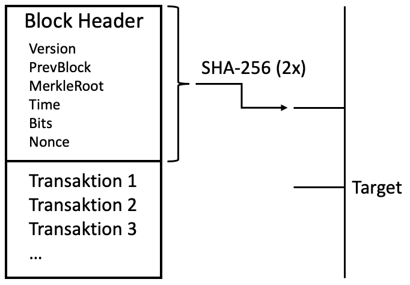
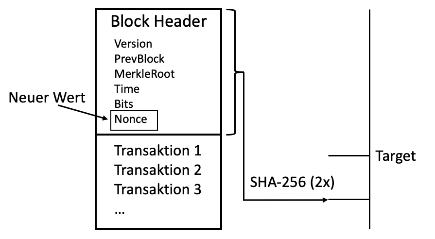

Der Proof-of-Work Mechanismus wird unter anderem bei der Kryptowährung Bitcoin angewandt. Die Namensgebung stammt daher, dass bei diesem Mechanismus von den Minern ein gewisser Arbeitsaufwand in Form von Rechenleistung aufgebracht werden muss, um einen neuen Block zu erzeugen.
Wird ein Proof-of-Work Mechanismus durchgeführt, wird das im Krypto-Kontext als Mining bezeichnet. Miner müssen hierbei eine Hash-Funktion bilden, die gewissen Vorgaben entspricht. Eine Hash-Funktion liefert eine Zeichenkette fester Länge, die aus Zeichenketten beliebiger Länge generiert wird. Das Ergebnis einer Hash-funktion ist nicht vorhersehbar, jedoch reproduzierbar. Miner müssen unzählige Eingaben durchtesten, bis sie eine finden, die einen Hash-Wert ausgibt, welcher den Vorgaben entspricht. Teilweise müssen diese Berechnungen milliardenfach durchgeführt werden, bevor der richtige Hash-Wert gefunden werden kann. Nur mit enormer Rechenleistung hat man hier eine Chance auf Erfolg. Hier liegt auch die Kritik, die oft an Kryptowährungen wie Bitcoin geäußert werden. Um die Blockchain erfolgreich am Laufen zu halten und die Rechenleistung, die für das Mining benötigt wird, aufzubringen, wird enorm viel Energie verbraucht.
Zunächst wird ein neuer Block mit Transaktionen aus dem Memory Pool gefüllt. Dieser Block soll gemined werden und der Blockchain angefügt werden. Dann wird ein Block Header erstellt. Der Block Header enthält die Werte:
Der Wert Bits ist eine verkürzte Version des aktuellen Targets. Nonce ist das Feld, das Miner selber ausfüllen um einen Hash-Wert unterhalb des Targets zu erreichen.
Jetzt beginnt das eigentliche Mining. Der Header wird so oft nach SHA-256 gehasht, bis ein Wert erreicht wird, welcher unter dem aktuellen Target liegt. Dabei muss bei jedem neuen Hash-Versuch der Wert Nonce im Header geändert werden (sonst würde jedes mal der selbe Hash-Wert generiert werden). Wichtig ist hier zu beachten, dass im Bitcoin Netzwerk immer zwei Mal gehasht wird.
Wenn der Wert nach dem Hashen oberhalb des Targets liegt, wird die Nonce angepasst. Dieser Vorgang wird so lange wiederholt bis der Hash-Wert unterhalb des Targets liegt.
Das Target (Ziel) beschreibt den Schwierigkeitsgrad um den nächsten Block zu minen und wird alle 2016 Blocks erneuert. Es soll erreichen, dass etwa alle 10 Minuten ein neuer Block gemined werden kann. Das aktuelle Target (Stand 13. November 2021; 15:00) lautet:
0000000000000000000cfecf00000000
00000000000000000000000000000000